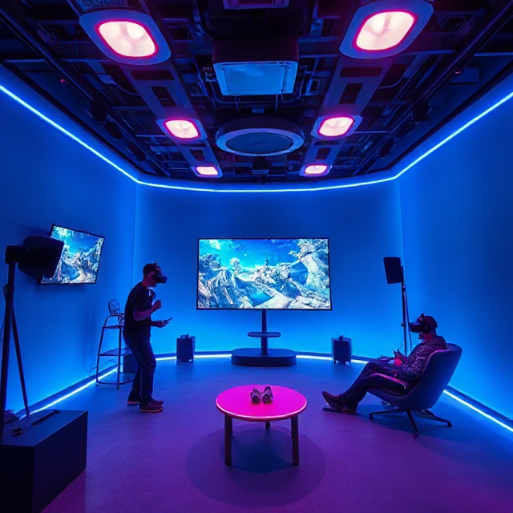

Het VR-Holodeck
Het VR-Holodeck is ontworpen om een boeiende ervaring te bieden voor zowel entertainment als ontspanning, gebruikmakend van de nieuwste virtual reality-technologie.
Functies
| Kenmerk | Beschrijving |
|---|---|
| Volledig onderdompelende omgeving | Het holodeck maakt gebruik van haptische feedbackpakken, omni-directionele loopbanden en 360-graden bewegingsregistratie om je compleet in de virtuele wereld te laten opgaan. |
| Geavanceerde AI-integratie | Intelligente NPC's reageren op jouw keuzes en creëren zo telkens unieke, persoonlijke interacties. |
| Sociale multiplayer-ondersteuning | Speel samen met andere reizigers in teamgebaseerde spellen of verken uitgestrekte virtuele omgevingen. |
| Breed scala aan ervaringen | Kies uit een variatie aan VR-activiteiten, zoals gewichtloze sport-simulaties, virtuele verkenning van Mars en andere planeten, historische herbelevingen en futuristische steden. |
| Aanpasbare avatars en werelden | Stel jouw avatar en de VR-omgeving naar wens in, van rustgevende landschappen tot energieke speelarena's. |